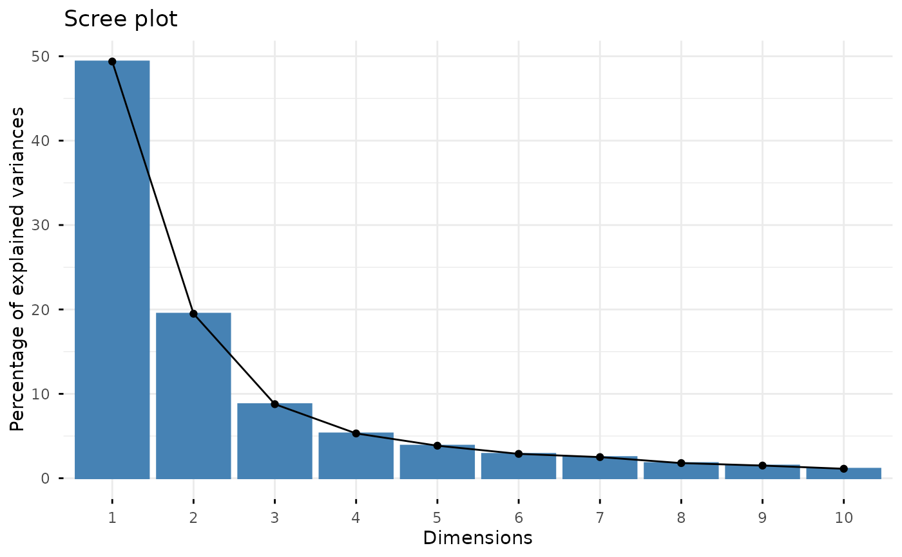
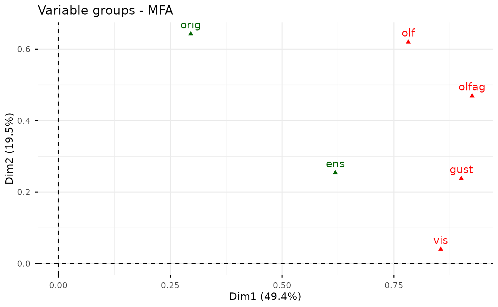
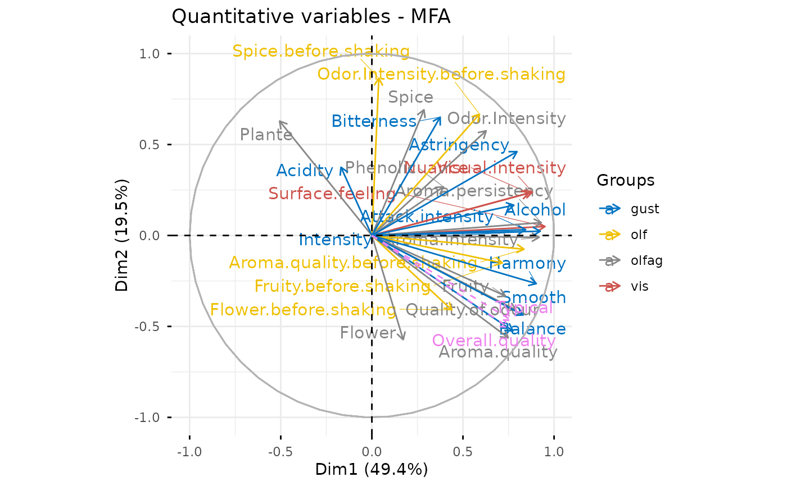
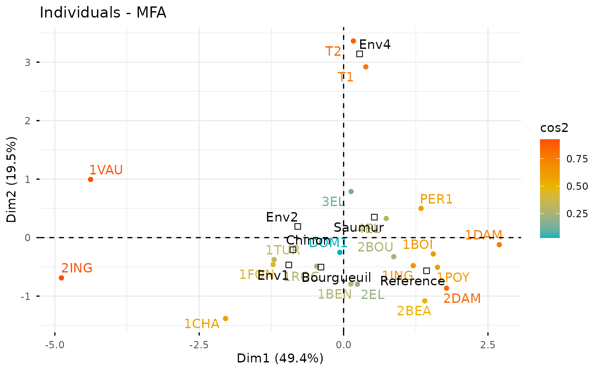
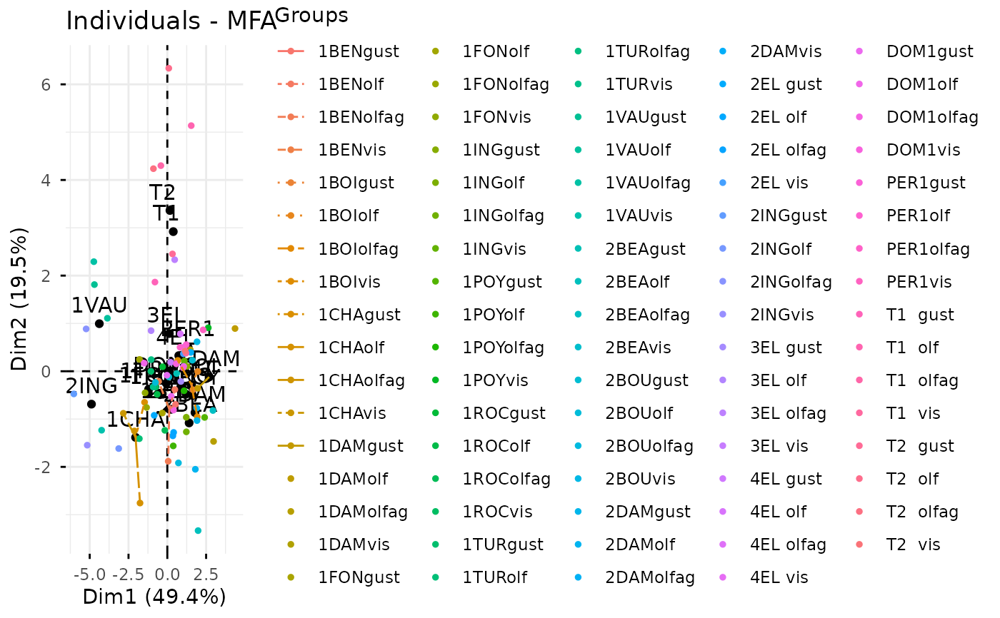
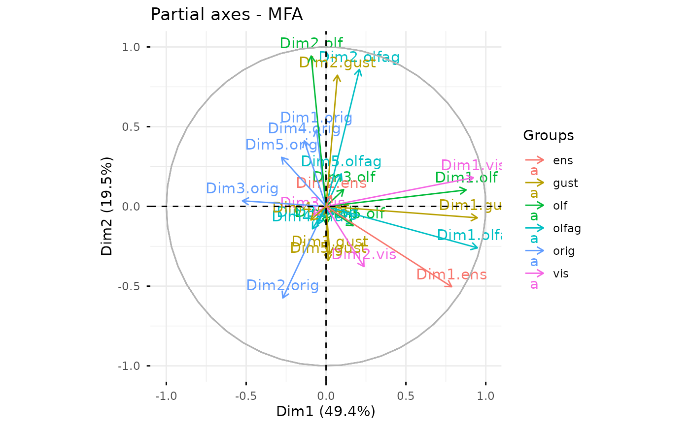
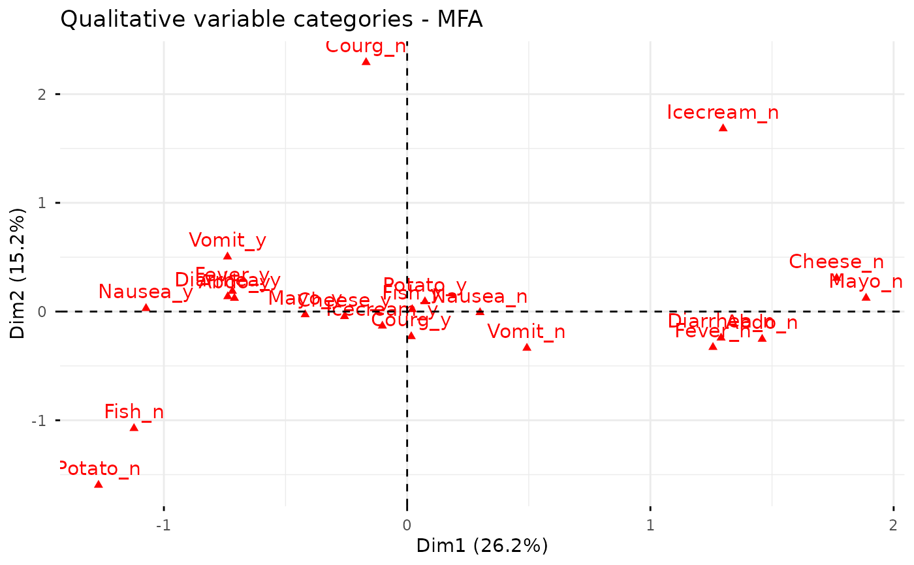
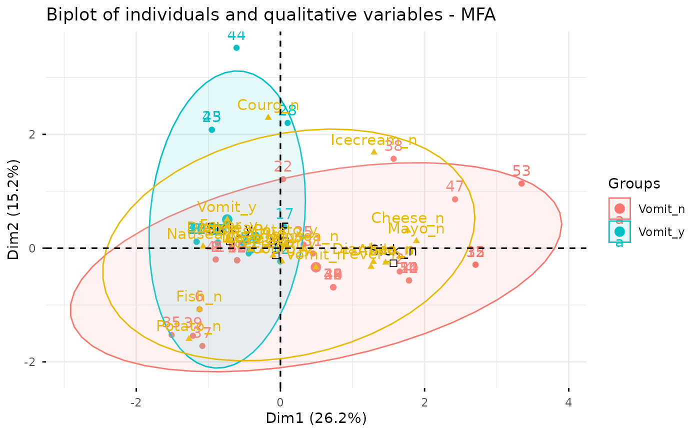

Multiple factor analysis (MFA) is used to analyze a data set in
which individuals are described by several sets of variables (quantitative
and/or qualitative) structured into groups. fviz_mfa() provides
ggplot2-based elegant visualization of MFA outputs from the R function: MFA
[FactoMineR].
fviz_mfa_ind(): Graph of individuals
fviz_mfa_var(): Graph of variables
fviz_mfa_axes(): Graph of partial axes
fviz_mfa(): An alias of fviz_mfa_ind(res.mfa, partial = "all")
fviz_mfa_quali_biplot(): Biplot of individuals and qualitative variables
Usage
fviz_mfa_ind(
X,
axes = c(1, 2),
geom = c("point", "text"),
repel = FALSE,
habillage = "none",
palette = NULL,
addEllipses = FALSE,
col.ind = "blue",
col.ind.sup = "darkblue",
alpha.ind = 1,
shape.ind = 19,
col.quali.var.sup = "black",
select.ind = list(name = NULL, cos2 = NULL, contrib = NULL),
partial = NULL,
col.partial = "group",
...
)
fviz_mfa_quali_biplot(
X,
axes = c(1, 2),
geom = c("point", "text"),
repel = repel,
title = "Biplot of individuals and qualitative variables - MFA",
...
)
fviz_mfa_var(
X,
choice = c("quanti.var", "group", "quali.var"),
axes = c(1, 2),
geom = c("point", "text"),
repel = FALSE,
habillage = "none",
col.var = "red",
alpha.var = 1,
shape.var = 17,
col.var.sup = "darkgreen",
palette = NULL,
select.var = list(name = NULL, cos2 = NULL, contrib = NULL),
...
)
fviz_mfa_axes(
X,
axes = c(1, 2),
geom = c("arrow", "text"),
col.axes = NULL,
alpha.axes = 1,
col.circle = "grey70",
select.axes = list(name = NULL, contrib = NULL),
repel = FALSE,
...
)
fviz_mfa(X, partial = "all", ...)Arguments
- X
an object of class MFA [FactoMineR].
- axes
a numeric vector of length 2 specifying the dimensions to be plotted.
- geom
a text specifying the geometry to be used for the graph. Allowed values are the combination of
c("point", "arrow", "text"). Use"point"(to show only points);"text"to show only labels;c("point", "text")orc("arrow", "text")to show arrows and texts. Usingc("arrow", "text")is sensible only for the graph of variables.- repel
a boolean, whether to use ggrepel to avoid overplotting text labels or not. The old
jitterargument is kept for backward compatibility and is silently converted torepel = TRUE.- habillage
an optional factor variable for coloring the observations by groups. Default value is "none". If X is an MFA object from FactoMineR package, habillage can also specify the index of the factor variable in the data.
- palette
the color palette to be used for coloring or filling by groups. Allowed values include "grey" for grey color palettes; brewer palettes e.g. "RdBu", "Blues", ...; or custom color palette e.g. c("blue", "red"); and scientific journal palettes from ggsci R package, e.g.: "npg", "aaas", "lancet", "jco", "ucscgb", "uchicago", "simpsons" and "rickandmorty". Can be also a numeric vector of length(groups); in this case a basic color palette is created using the function palette.
- addEllipses
logical value. If TRUE, draws ellipses around the individuals when habillage != "none".
- col.ind, col.var, col.axes
color for individuals, variables and col.axes respectively. Can be a continuous variable or a factor variable. Possible values include also : "cos2", "contrib", "coord", "x" or "y". In this case, the colors for individuals/variables are automatically controlled by their qualities ("cos2"), contributions ("contrib"), coordinates (x^2 + y^2 , "coord"), x values("x") or y values("y"). To use automatic coloring (by cos2, contrib, ....), make sure that habillage ="none".
- col.ind.sup
color for supplementary individuals
- alpha.ind, alpha.var, alpha.axes
controls the transparency of individual, variable, group and axes colors, respectively. The value can variate from 0 (total transparency) to 1 (no transparency). Default value is 1. Possible values include also : "cos2", "contrib", "coord", "x" or "y". In this case, the transparency for individual/variable colors are automatically controlled by their qualities ("cos2"), contributions ("contrib"), coordinates (x^2 + y^2 , "coord"), x values("x") or y values("y"). To use this, make sure that habillage ="none".
- shape.ind, shape.var
point shapes of individuals, variables, groups and axes
- col.quali.var.sup
color for supplementary qualitative variables. Default is "black".
- select.ind, select.var, select.axes
a selection of individuals/partial individuals/ variables/groups/axes to be drawn. Allowed values are NULL or a list containing the arguments name, cos2 or contrib:
name is a character vector containing individuals/variables to be drawn
cos2 if cos2 is in [0, 1], ex: 0.6, then individuals/variables with a cos2 > 0.6 are drawn. if cos2 > 1, ex: 5, then the top 5 individuals/variables with the highest cos2 are drawn.
contrib if contrib > 1, ex: 5, then the top 5 individuals/variables with the highest cos2 are drawn
- partial
list of the individuals for which the partial points should be drawn. (by default, partial = NULL and no partial points are drawn). Use partial = "all" to visualize partial points for all individuals.
- col.partial
color for partial individuals. By default, points are colored according to the groups.
- ...
Arguments to be passed to the function fviz()
- title
the title of the graph
- choice
the graph to plot. Allowed values include one of c("quanti.var", "quali.var", "group") for plotting quantitative variables, qualitative variables and group of variables, respectively.
- col.var.sup
color for supplementary variables.
- col.circle
a color for the correlation circle. Used only when X is a PCA output.
Examples
# Compute Multiple Factor Analysis
library("FactoMineR")
data(wine)
res.mfa <- MFA(wine, group=c(2,5,3,10,9,2), type=c("n",rep("s",5)),
ncp=5, name.group=c("orig","olf","vis","olfag","gust","ens"),
num.group.sup=c(1,6), graph=FALSE)
# Eigenvalues/variances of dimensions
fviz_screeplot(res.mfa)

# Group of variables
fviz_mfa_var(res.mfa, "group")

# Quantitative variables
fviz_mfa_var(res.mfa, "quanti.var", palette = "jco",
col.var.sup = "violet", repel = TRUE)

# Graph of individuals colored by cos2
fviz_mfa_ind(res.mfa, col.ind = "cos2",
gradient.cols = c("#00AFBB", "#E7B800", "#FC4E07"),
repel = TRUE)

# Partial individuals
fviz_mfa_ind(res.mfa, partial = "all")
#> Warning: This manual palette can handle a maximum of 13 values. You have supplied 84
#> Warning: Removed 71 rows containing missing values or values outside the scale range
#> (`geom_segment()`).

# Partial axes
fviz_mfa_axes(res.mfa)

# Graph of categorical variable categories
# ++++++++++++++++++++++++++++++++++++++++
data(poison)
res.mfa <- MFA(poison, group=c(2,2,5,6), type=c("s","n","n","n"),
name.group=c("desc","desc2","symptom","eat"),
num.group.sup=1:2, graph=FALSE)
# Plot of qualitative variables
fviz_mfa_var(res.mfa, "quali.var")

# Biplot of categorical variable categories and individuals
# +++++++++++++++++++++++++++++++++++++++++++++++++++++++++
# Use repel = TRUE to avoid overplotting
grp <- as.factor(poison[, "Vomiting"])
fviz_mfa_quali_biplot(res.mfa, repel = FALSE, col.var = "#E7B800",
habillage = grp, addEllipses = TRUE, ellipse.level = 0.95)
